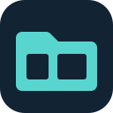

Een eigen mapvorm met twee bestandsvensters. Het beeldmerk staat los van de naam en blijft herkenbaar als klein app-icoon.

Technisch en compact. De twee vensters vormen samen het centrale werkvlak.
Benadrukt ordening en overzicht. Een directe naam voor dagelijks bestandsbeheer.
Meer gericht op systeemgebruikers. Verwijst naar directories en bestandsvensters.